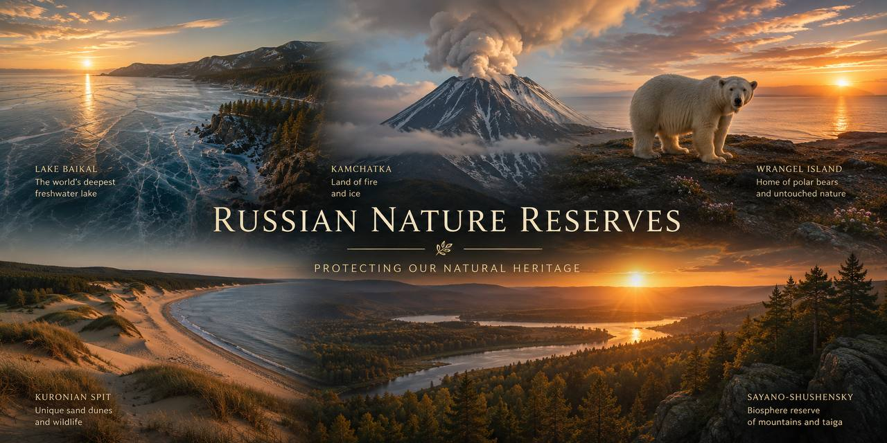

💡 Use full sentences with «I think…», «In my opinion…», «Personally, I…» — the same registers you need for Task 3 & 4.
First — read & flip — make sure you can use each word in a sentence:
1. Every year humans millions of tonnes of CO₂ into the atmosphere.
2. Polar bears are now officially an because of melting ice.
3. In our city we paper, glass and plastic into separate bins.
4. Solar and wind power are two main types of .
5. Cutting down forests is called .
6. A lifestyle that does not damage nature is called .
7. Volunteers meet every Saturday to the river bank.
8. My grandmother says that in Soviet times almost nobody bread.
9. Air pollution is especially bad in cities with heavy .
10. If we all took short showers, we would and reduce our monthly bills.
Right form = right ending. Watch for spelling (pollute → pollution), part of speech, positive/negative prefix. Six early items to warm up your suffix-radar.
Speaker A: I have loved birds for as long as I can remember. Every spring, I get up before sunrise and cycle out to the wetlands near our dacha with my grandfather's old binoculars. Last year I finally spotted a white-tailed eagle, and I nearly dropped my notebook from excitement. Birdwatching taught me that even ordinary parks are full of species most people never notice.
Speaker B: Two years ago I decided to stop buying anything wrapped in plastic. It sounds extreme, but I now bring my own cotton bags to every shop, drink from a metal bottle, and buy shampoo in solid bars. My friends thought I was crazy at first, but three of them have started doing the same, and my rubbish bin is almost empty at the end of the week.
Speaker C: Every Saturday morning our neighbourhood group meets at the edge of the forest with gloves, bin bags and coffee. In two hours we usually collect enough plastic bottles and cigarette ends to fill an entire truck. It is depressing and inspiring at the same time. We post before-and-after photos online, and slowly more locals join us.
Speaker D: I run a small blog about food waste, mostly for other teenagers. I show what a normal family throws away in a week, then suggest simple recipes that use everything before it goes bad. My grandmother is my main teacher — she grew up in the Soviet Union and honestly cannot understand why anyone throws bread away.
Speaker E: Our flat is on the ninth floor, but my balcony is now a proper mini-garden. I grow tomatoes, basil and salad leaves in old buckets, and I water them with rainwater I collect in a plastic tank. In August I can eat something from my own garden almost every day, and I save money at the same time.
Speaker F: At our dacha we have a compost heap in the corner, and every kitchen scrap goes into it — potato peel, apple cores, tea leaves. Six months later that same rubbish becomes rich black soil that we use for the vegetable beds. It is honestly like magic, and it costs nothing.
Kirill: Nastya, guess where I am going next weekend! I've finally got a permit for the Kivach nature reserve.
Nastya: The waterfall in Karelia? Amazing. Is it a whole weekend?
Kirill: Yes, we leave on Friday evening and come back on Sunday night. My father is coming, and also two friends from our biology club.
Nastya: Have you booked a guide?
Kirill: We have — an English-speaking one, because we want to practise. It costs a bit more, but our biology teacher is paying for the boat tour.
Nastya: What are you most excited about?
Kirill: The waterfall itself. I've been to Karelia twice before, but always in winter, never in spring when the water is at its fullest.
Nastya: I've never been to Karelia at all. My parents keep saying we will go next summer, but next summer never comes.
Kirill: Come with us! Actually no — the permit group is full, only ten people are allowed at once.
Nastya: Fine. Take good photos then. And please, please, don't leave a single wrapper behind.
Host: Yulia, thanks for joining us. You are only twenty-six, but you already lead a small research group at the Baikal Reserve. Tell us how it all started.
Yulia: Well, I grew up in Irkutsk, close to the lake. My mother worked as a school biology teacher, so nature was our dinner-table conversation. But interestingly, I didn't want to be a biologist. I wanted to be a journalist. I only changed my mind at seventeen after a summer school in ecology.
Host: Where did you study?
Yulia: I did my bachelor's at Irkutsk State University, then moved to Moscow for the master's programme at the Timiryazev Academy. Now I'm finishing my PhD there. My topic is invasive species — specifically, how they affect endemic fish in Lake Baikal.
Host: Have you spent time abroad?
Yulia: Yes, one exchange semester in Norway, and last summer I gave a talk in Canada. Both trips were useful, but I always want to come home. My problem is here — a Russian lake, a Russian climate.
Host: What's the biggest difficulty in your work?
Yulia: Money is not the main issue — the reserve supports us well. The real problem is time. A single field season on Baikal is only three months, and weather can ruin months of preparation.
Host: Any advice for young people who care about the environment?
Yulia: Two things. First, don't wait for a big project — start with your own street. Pick up rubbish once a week. Second, don't listen to people who say one person can't change anything. That is simply not true.
Long before the words «sustainable» and «zero-waste» became popular in cities, ordinary Russian households were already following a set of habits , and even today most of these habits quietly survive inside otherwise very modern lives.
The clearest example is the dacha. Almost every family, however small the plot, still grows tomatoes, cucumbers and berries by hand, , and puts the surplus into glass jars for the winter.
Then there is the traditional habit of mushroom and berry picking in forests every autumn. Whole families go out together with wicker baskets before sunrise, . Guides in Karelia say that a good picker leaves the forest looking exactly as they found it.
Composting was normal in most Soviet gardens, and it never really disappeared. Kitchen scraps, tea leaves and apple cores are still thrown behind the shed in the corner of the plot, . That heap becomes rich black soil within a single season.
Public transport, which many Europeans discover only after they start caring about their carbon footprint, has been the everyday choice of most Russians for decades. The Moscow metro alone carries about seven million passengers a day, .
Finally, there is a quiet but powerful rule that grandmothers still repeat in every kitchen: never throw away bread. Even stale slices become croutons for salad or a pudding with berries and cottage cheese . For older Russians it is not a fashion — it is a memory of the hungry years, and it is a lesson worth keeping.
Vladimir Vernadsky was born in 1863 in Saint Petersburg, into a family of scientists and civil servants. As a schoolboy he already collected mineral samples on family holidays in Crimea, and by fifteen he could name every rock in his father's cabinet. Later, Vernadsky would say that everything he became, he owed to those long summer afternoons spent studying the same beach from every possible angle.
At university he specialised in mineralogy, but he was equally interested in soil science, radiochemistry and the philosophy of nature. In 1926, at the age of sixty-three, he did the work that made him world-famous: in a slim book called simply «The Biosphere», he argued that all living things on Earth form a single, thin layer — the biosphere — and that this layer actively shapes the atmosphere, the oceans and even the rocks under our feet. What impressed the scientific world most was not the idea of life on Earth — many biologists had described it before — but the fact that Vernadsky insisted living matter is a geological force. Within thirty years, satellite photos and modern climate science would prove him almost entirely correct.
Vernadsky's public life was not always easy. He argued with Soviet ministers about the use of radioactive elements, he was accused of «bourgeois idealism» by more orthodox colleagues, and his open letters in defence of arrested scientists in the 1930s put him in real personal danger. But he stayed a working scientist to the end. His last big project was to sketch a future stage of the biosphere in which human intelligence would become the leading force — an idea he named the noosphere, or the «sphere of the mind».
Today, more than one hundred years after his key papers, his term «biosphere» appears in every school textbook on Earth, and satellites in low orbit are still confirming things he wrote in Russian without ever leaving his study. And curiously, in Russia itself, Vernadsky is remembered not only for science but for his belief that a scientist has a duty to speak up — from the fate of a single forest to the future of the whole planet.
Read each text and put the word in CAPITALS at the end of the line into the correct form so that it fits the text grammatically. Only one word goes in each gap.
Choose the best option in each drop-down.
These 7 items use active B1+ / B2 vocabulary about environment, choice and linking. Choose carefully.

Write a reply. In your reply: answer his 3 questions, then ask 3 questions about a green project he wants to start in his school.
| Habit | % of students |
|---|---|
| Sorting rubbish at home | 32 % |
| Using a reusable water bottle | 28 % |
| Refusing plastic bags in shops | 18 % |
| Turning off water while brushing teeth | 14 % |
| Buying second-hand clothes | 8 % |
Watch the highlighted words — they carry the meaning & the phonetic traps.
Lake Baikal, hidden inside the mountains of southern Siberia, is by many measures the most remarkable lake on the planet. It is around twenty-five million years old, more than sixteen hundred metres deep, and it holds about one fifth of all the fresh water on Earth that is not frozen. Local Buryat communities have always called it the sacred sea, and even from a satellite photo you can see why.
Everything living inside Baikal is unprecedented. Around eighty per cent of its plants and animals are endemic, which means they exist nowhere else in the world — from a transparent shrimp that quietly filters the water to the nerpa, the only exclusively freshwater seal on the entire planet. In late February, when the surface freezes into ice so clear that you can watch fish swim beneath your boots, hundreds of skaters and photographers make the long trip from Irkutsk to see it.
Yet Baikal is also under real pressure. Over the last thirty years, average water temperature in the shallow bays has risen noticeably, invasive species have moved in from warmer rivers, and plastic waste from tourist beaches now floats past the shoreline every summer. Ecologists at the reserve say that Baikal will survive us — but it deserves better visitors than the ones it currently gets, and every child who grows up on its shore knows this without being told.
💡 Traps: Baikal /baɪˈkɑːl/ (stress on 2nd), Siberia /saɪˈbɪəriə/, fifth /fɪfθ/ (double consonant cluster), frozen /ˈfrəʊzən/, unprecedented /ʌnˈprɛsɪdɛntɪd/ (long word, don't rush), per cent /pə ˈsɛnt/ (two words), endemic /ɛnˈdɛmɪk/ (stress on 2nd), shrimp /ʃrɪmp/, nerpa /ˈnɜːpə/, February /ˈfɛbrʊəri/ (silent «-r-»), Irkutsk /ɪəˈkʊtsk/, temperature /ˈtɛmp(ə)rətʃə/, species /ˈspiːʃiːz/, ecologists /ɪˈkɒlədʒɪsts/, visitors /ˈvɪzɪtəz/.
You are planning a visit with your biology club. Ask 4 direct questions about the 4 key-words shown on the advertisement:
Topic: «A young Russian's view of nature, ecology and daily choices.»
Imagine that you and your friend are doing a school project «Ways of Reducing Plastic Waste in Your City». You have found two photos to illustrate it, but for technical reasons you cannot send them now. Leave a voice message to your friend explaining your choice of the photos and sharing some ideas about the project.
Tap Start recording and answer the project task aloud. As you speak, the system checks the ФИПИ criteria in real time. Re-record as many times as you want. Nothing leaves your browser.
🎤 Writing (37, 38) & Speaking (1, 3, 4) are self-scored — check the self-check list below.